Hanafuda
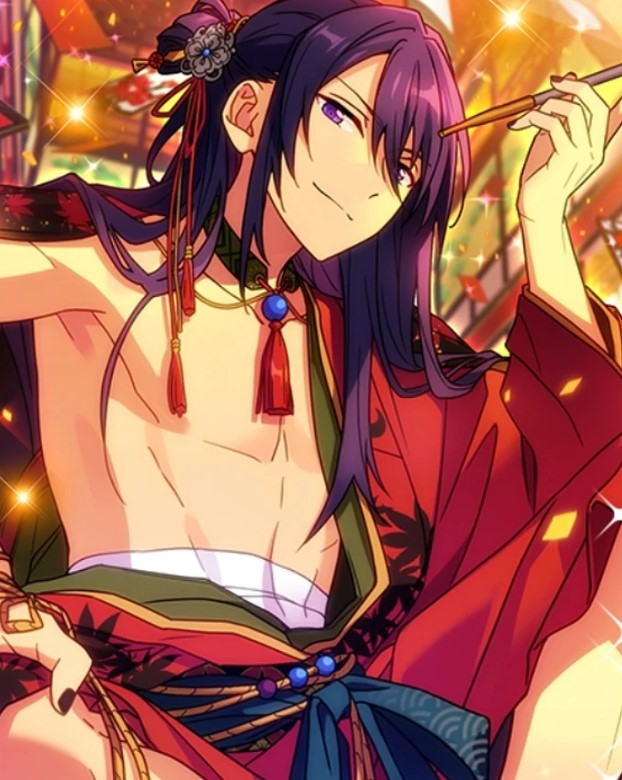
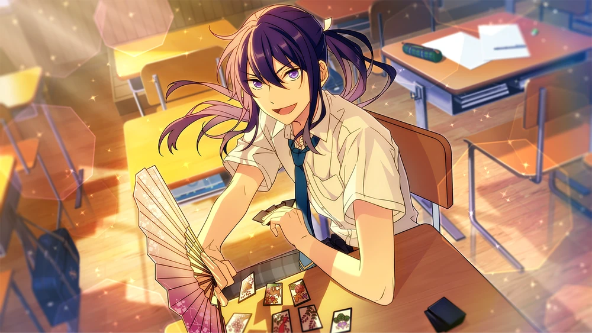
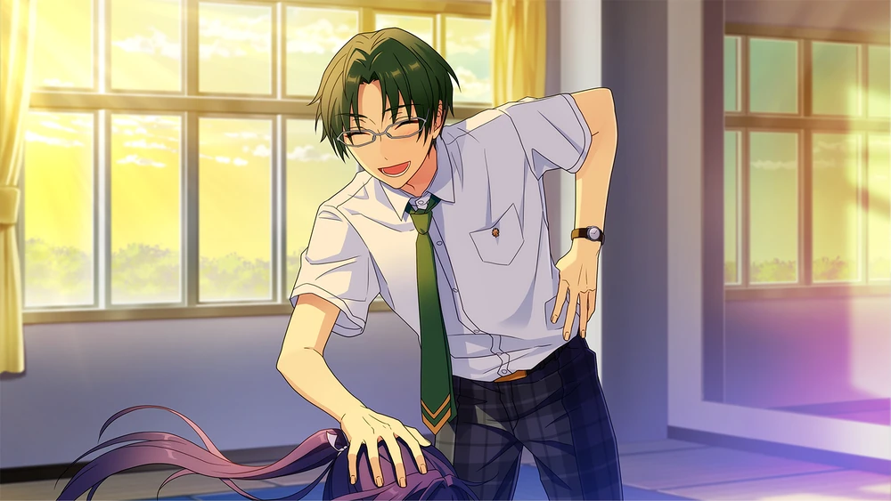
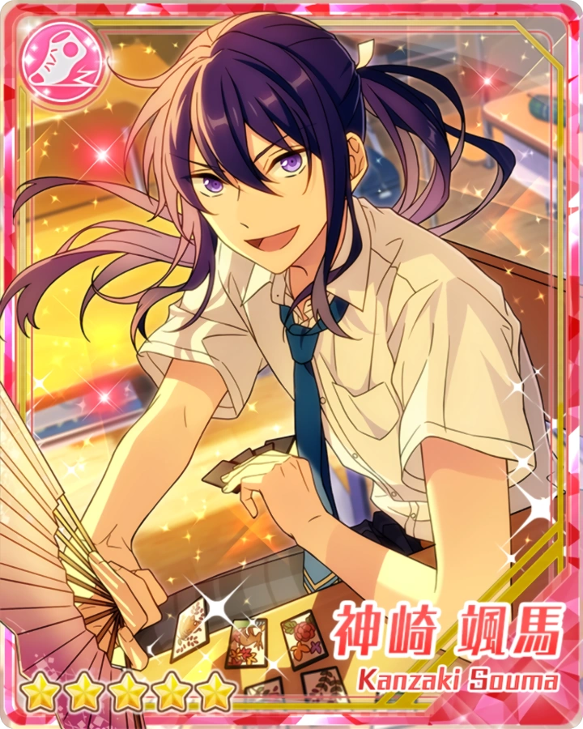
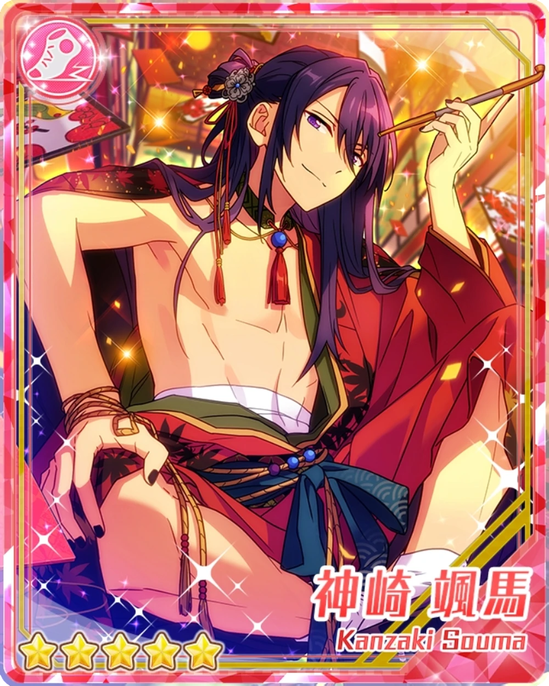
- TBDTBD.
- TBDTBD.
- TBDTBD.
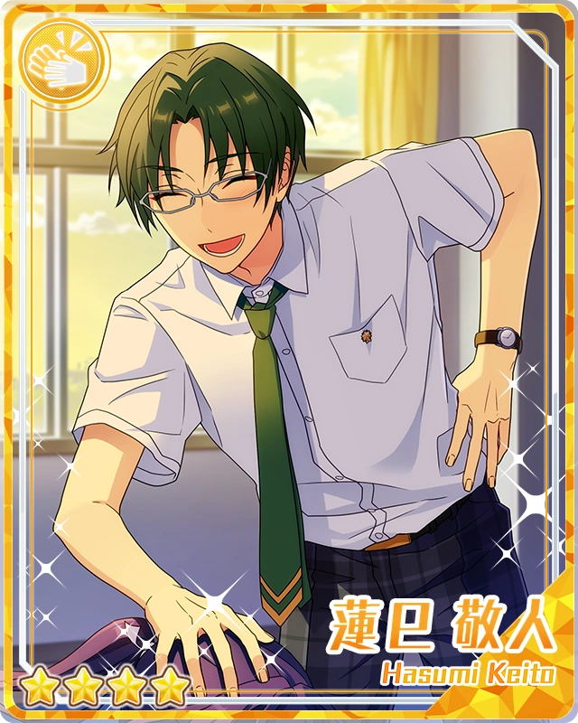
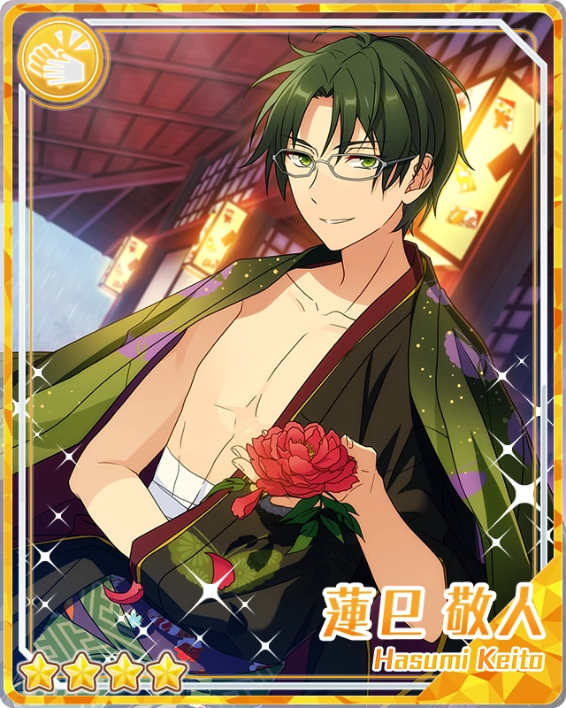
- TBDTBD.
- TBDTBD.
- TBDTBD.
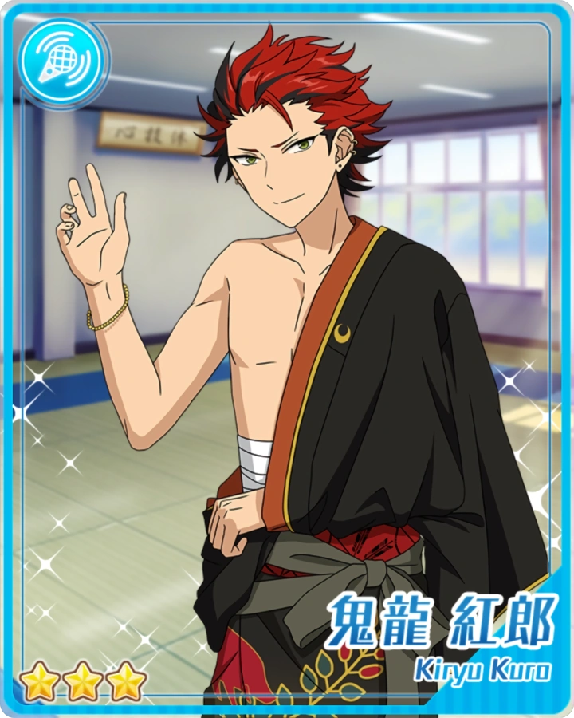
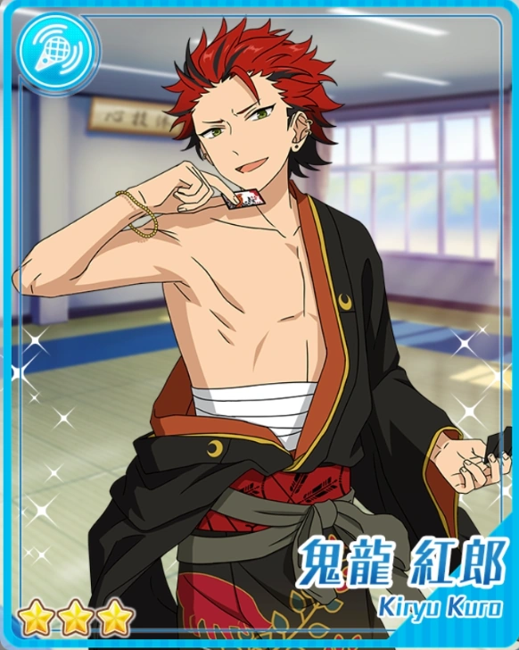
- TBDTBD.
- TBDTBD.
- TBDTBD.
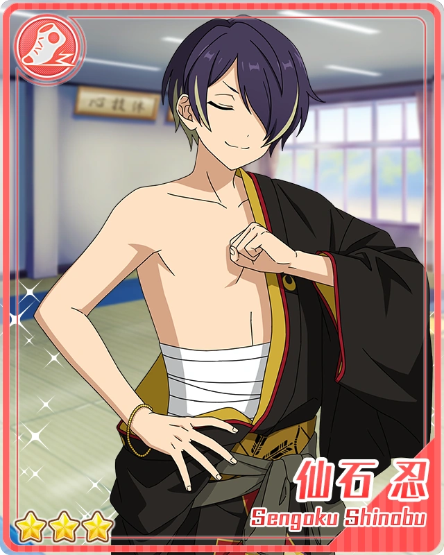
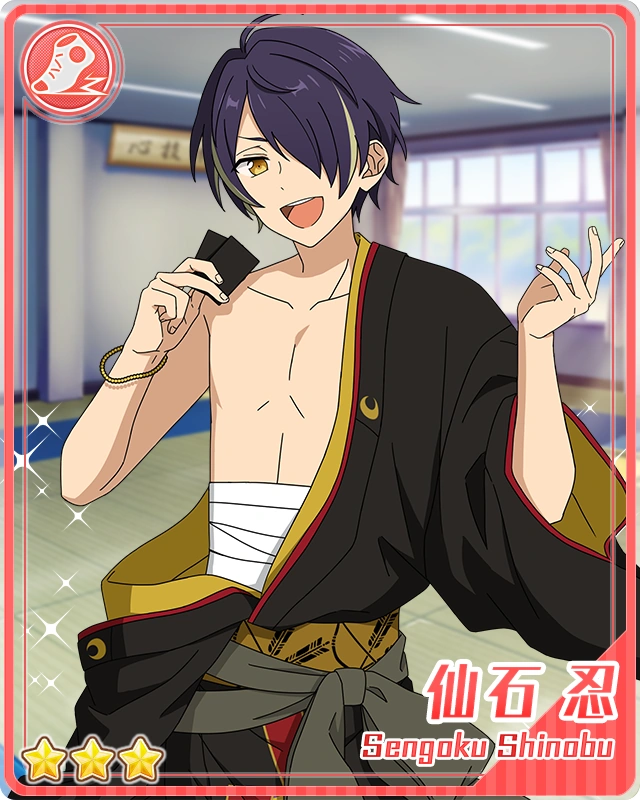
- TBDTBD.
- TBDTBD.
- TBDTBD.
Hanafuda Chapter 1

Excuse me, I’m coming in.
Good Afternoon, Lieutenant Vice President. 1
Do you have business with Class-2A?
Don’t call me that, it makes me sound like I’m in the yakuza. I’m aware that you hate me, but you’ll have an easier life if you concealed your malice a little more.
Yes, yeS, I don't want a lecture…
But it's really unusual for you to come to our classroom, isn’t iT? Since you're such a distinguished vice president, why don't you just invite the underclassmen to your citadeL?
I have an errand for a guy who doesn't have the means for me to call him, so I have to walk there myself, don’t I?
AhhH… So you’re here for Sohma-kuN?2 That boy doesn’t carry a phone with him– a pretty rare habit these dayS.
That’s why there’s no choicE but to use old-fashioned means of communicatioN.
It helps that you’re quick to the point. Is Kanzaki here?
YeP. LooK, he’s playing in the corner of the classrooM.
Now, now, it’s about time for our match…☆
Hmm. He's unusually riled up, albeit befitting for a high school boy.
I'm glad he’s having fun... He's an odd guy, so I was worried he'd stand out like a sore thumb in class.
Ahaha. It's not unusual to see "odd guys" at Yumenosaki Academy nowadayS, since it's become a breathable environment, you knoW.
Especially for Sohma-kuN. He’s mellowed out since he became a second-yeaR.
Well, whateveR. I’d hate to see people think I’m buddy-buddy with the vice president because we talked for so lonG, so I'M going to go noW.
Right, right, go off now. I'm sorry for interrupting you as you were leaving the classroom, Sakasaki.
Don’t worrY, it was just bad timinG. No, it was bad lucK... I wonder if I've contracted Senpai's misfortunE?
( ... There he goes. Peculiar as always, just what you'd expect from a former member of the Five Eccentrics.)
(But before, every time we met, he’d harass me in some way, like hitting me with beans...)
(Compared to that, I feel that we've been able to interact much more amicably.)
(I don’t think it means he’s forgiven us… But maybe it shows that Sakasaki is changing too.)
(I figured he was the type of person who had little room to grow, since he had such a high level of perfection to begin with, but look at him now.)
(Heheh. The good changes and remarkable improvement of the underclassmen always manages to surprise me.)

Alright! This Kanzaki Souma is the parent! I’ve finally got custody…☆
… Hm?
Hmhmm, my hand is quite excellent, too. This match shall be mine to take, Anzu-dono~♪
... Kanzaki. What is this, what are you and Anzu talking about? I may have to lecture you for an hour or so depending on the situation.
Oh, Hasumi-dono! What a surprise; what brings you all the way to my classroom?
In the event of an emergency, I’d have gone anywhere if you had simply called for me!
Even for me, I think it's inefficient to come find you every time I need you for something, but...
I don't have any other choice. No matter how many times I tell you to, you don't carry your smartphone on you.
Smartphones these days are easy to operate, even for people who aren’t accustomed to modern appliances. If you need it, Kiryu and I will teach you how to use it thoroughly.
Ahaha. A sermon right out the gate; that is truly just like you to do, Hasumi-dono.
Let us leave that aside for now; what really brought you here?
Mm. I’ve received a small job to do over the weekend… so I want you to come to the dojo after school today. Kiryu will be there, and I’d like to discuss the matter with all three of us present together.
But today was supposed to be a day off from AKATSUKI activities, so if you have other things to do, you can prioritize those.
A-ha. Right, I understand. I’m humbled by your concern, but I have no matter nor training to conduct today, so I can attend the meeting.
Is that right? That's good to hear. It’d be tiring to have to repeat the same explanation over and over again, so it’ll be easier if I do it all at once.
Well if that’s the case, I'd like you to come to the dojo after school. I don’t mind if you take your time.
Understood. Ahh, I apologize profusely for making you come all the way here just for that.
However, considering how Hasumi-dono operates, I believe you could’ve chosen to call me by broadcast or the like.
Wouldn’t you hate that and say something like, “It’s disgraceful of me…”? Being called over school broadcast doesn’t give a good impression to those around you, after all.
It’s easier to walk to the second-year classroom than to ask a member of the Broadcasting Committee to call for you anyways, so don't worry about it too much, Kanzaki.
I feel like I gained something by seeing how you usually behave in the classroom. I’m glad to see you’re enjoying yourself much more than I had expected.
Hanafuda Chapter 2
I see. I was shocked to hear such a suspicious remark from you earlier, but now I understand... You were playing with hanafuda cards.
That's why you were talking about custody, right? Are you playing the ”koi koi” card game by any chance?
Having fun and making merry with classmates in the classroom is typical of high schoolers. But I feel like hanafuda card games as a choice of game are too complicated.
Hahaha, how embarrassing of me. I’m personally more familiar with this game than “Toranpu”, but…
It seems like everyone my age does not know how to play, which makes me feel a little lonely.
Adonisu-dono showed interest, so I taught him various things, but he still hasn’t memorized the “ruuru”.
…………
Hm, Otogari? Come to think of it, you’re in the same class as Kanzaki, and you’re close friends, aren’t you?
Ahh, Hasumi-senpai… Lend me your help. I’d like to play a hanafuda card game with Kanzaki and Anzu too, but the terminology is too complicated.
That’s not surprising. I also only understand the simplest and most familiar card game, “koi-koi”. But I haven't played it in a while, so I only vaguely remember the hand combinations.
Ahh, yes… No matter how many times the combinations are explained to me, I can't connect them to the words that I do know, so I look up the meaning of each word in a dictionary and write them down in my notebook.
Umm… This one with this one would be sakura ni makura... Which is “Cherry Blossom” and “Curtain Call”…?
You’re starting to sound like Suou, Otogari.
Uu… Oogami likes card games in general, so we usually play together… so I’m sure that if I could just remember the rules, I could play with you guys too.
Heheh. Adonisu-dono, you might not be confident with the language yet, but you’re quite clever, aren’t you?
So instead of getting trapped by the actual meaning of the terminology, I think it's better to memorize words through intuition by looking at them.
All hanafuda cards have pictures on them, so it's better to memorize them by the pictures than by the meanings of the words.
Generally, the more extravagant the picture, the stronger the card… or rather, the higher the score.
Here, this is a picture with the moon on top of a mountain, correct?
When you combine it with the sake card, you get the “moon-viewing with a drink” hand.
It's like having a glass of sake while looking at the moon: getting tipsy and feeling good.
This one is sake? So this red part wasn’t… erm, a UFO of some sort?
Hmm. It certainly does look like an unidentified flying object, but it's actually sake.
So, the object behind this strangely pessimistic-looking bird... Is it also sake?
Heheh. Since you know the meaning of “pessimistic”, you’ll surely be able to quickly memorize the words used in hanafuda.
By the way, this is the moon. A crescent moon, to be exact.
So this is also a moon…? Alright, when you combine this with the sake card, do you still get “moon-viewing with a drink”?
No. Unfortunately, it doesn’t become a legible hand unless the sake card is matched with this full moon card.
Difficult… Hanafuda is difficult…
Don’t say that, I’d like you to try your best to learn it.
There are games like “Hachi-hachi” that are meant to be played with three people, so if Adonisu-dono grows to understand hanafuda, it will be more fun.
Hahaha. Looks like you're having a hard time, Kanzaki.
No, no, talking with Adonisu-dono is beneficial for me as well.
I think that trying to explain difficult things in an understandable way also fits with AKATSUKI’s principles.
Like traditional performing arts… When it comes to things like Noh and Kabuki, many people don't understand the meaning of the words, and thus can’t understand the fun behind it.
We AKATSUKI will be the ones who translate and provide that “fun” in a modern way.
That is another one of AKATSUKI’s principles that I resonate with.
Even when I perform on stage for an event related to my household, I find it a shame that small children look at me in confusion, due to it being incomprehensible to them.
Mm, that sounds about right. At my temple, we try to explain the meaning of sutras in an understandable, modern way too.
Heheh. Born and raised in such a house, I believe Hasumi-dono truly is the linchpin of AKATSUKI’s founding principle.
… Oh, it isn’t really the time to casually chat, is it?
At this rate, we may not have time to cook, Anzu-dono.
So far, I’ve been in the lead this round, so is it alright if I'm in charge of cooking today?
? What do you mean by that?
Mm. Anzu-dono and I often eat together at the cafeteria, choosing the “koosu” where we make the meal ourselves.
This is especially common when “Torikkusutaa” is away for work.
Ah, now that I think about it, there isn’t a noisy pack of guys hanging around. I guess they're busy taking their preparation seriously for SS.
Mhm. This time they seem to be doing a magazine interview that wasn’t organized by Anzu-dono, so she is left to “house-sit” in the school, so to speak.
But if she could, it seems like she’d like to accompany all of “Torikkusutaa”'s activities.
Don’t. If you’re always hanging out with those guys, you won't be able to attend class properly.
Since they’re specifically out for a job, Trickstar is still considered as attending school, but for you, Anzu, it’d be considered as cutting classes under the rules.
It's not a good idea to end up in a situation like that vampire, where you have to repeat a grade because you didn’t attend enough days.
… Hm, the producer course will properly start from next school year onward, so the rules regarding attendance will need to be adjusted a bit.